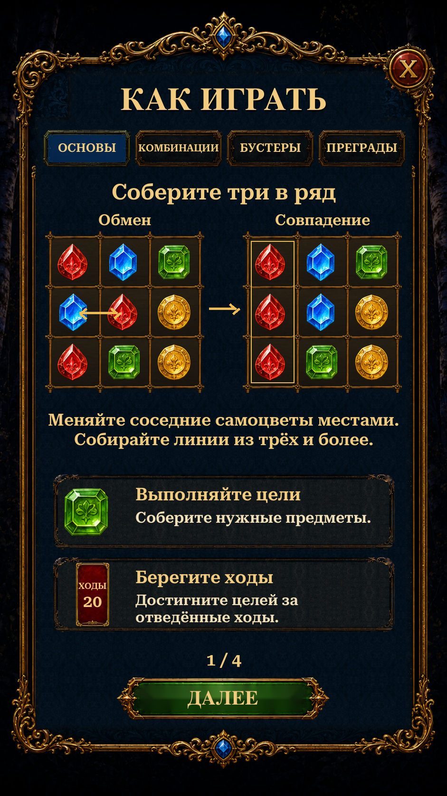

Updated the teaching diagrams with Gameplay’s source rails and wood, reused the approved framed booster illustrations, and added consistent native button-press feedback. Preserves the approved ornate Help panel.
Four localized sections explain matching, specials, inventory boosters and obstacles. Diagrams are read-only examples; Next, Previous, Done and Close use the existing guide and return routes. The approved reference is the earlier generated Help concept, not a separate original gameplay screen. Unity views below are actual Play Mode captures using isolated test saves and simulated phone dimensions/safe areas. Reference and previous-version views are labelled separately.

Changes and validation · Remaining reference differences · Verification results